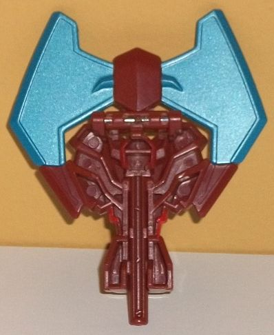
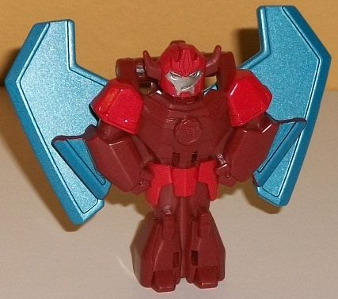
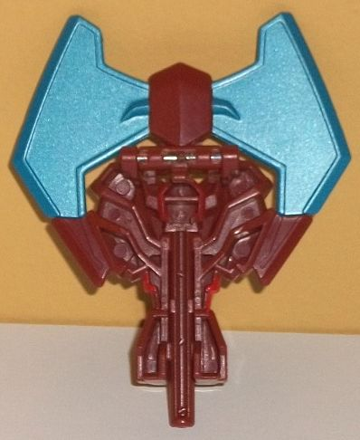
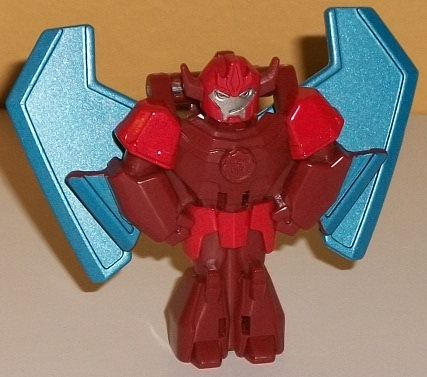
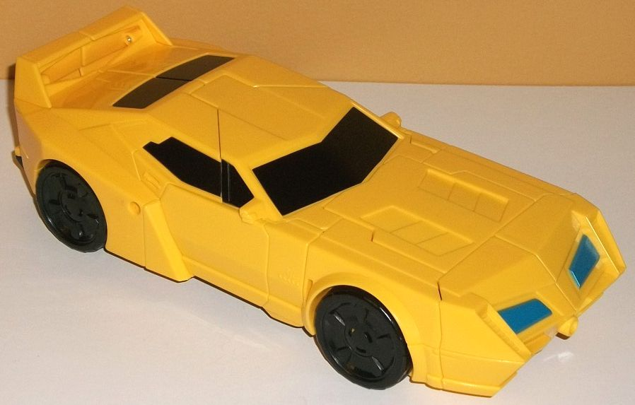
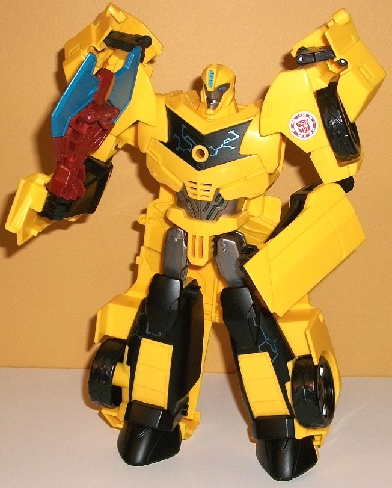

 
Allegiance : Autobot
Difficulty of Transformation : Very Easy
Color Scheme : Dark dull brick red, moderately light metallic blue, and some moderately light red and silver
Individual Rating : 4.4
 Buzzstrike
Buzzstrike


Allegiance
: Autobot
Difficulty of Transformation
: Very
Easy
Color Scheme
: Dark dull brick red,
moderately light metallic blue, and some moderately light red and silver
Individual Rating
: 4.4
Buzzstrike's alternate
mode is an axe. From a silhouette point of view, it's pretty good-- it's
a nice, double-headed axe blade, with a handle that's only a bit bulkier
than it should be, and most of the robot upper body fits in with the lower
segment of the axe blade. I honestly don't know which way to pose this--
on one side the entire axe blade is painted, but there's the robot body
details obvious under it; on the other side the bottom tips of the axe
blade aren't painted, but there also aren't a bunch of obvious robot bits.
I'm going with the latter for the pics. There's some hollow bits because
it's the back of the robot mode on the lower body, but it fits together
better in the middle section. It also has the long peg that attaches Buzzstrike
to Bumblebee's chest on the back with this side flipped forward. The color
scheme is mostly a dull dark brick red, which contrasts pretty well with
both 'Bee's yellow and the light metallic blue paint on the axe blade,
though I wish it was just a tad LESS dull just so that the toy visually
popped a bit more.
To transform Buzzstrike
to robot mode, you just fold down the top section of the axe blade, and
the robot head automatically pops up, along with the holding peg on the
bottom sliding up into the legs. Turn it around, and there you go! From
a looks perspective, Buzzstrike looks pretty nice here; his proportions
are solid overall, though if you look at him from the side he's a bit skinny,
so he's admittedly a bit 2-D. He's got some stylized armor details all
over his body that makes it looks like he's wearing some simple knight
armor-- with a fairly wide chest and lower arms and relatively small lower
legs, he also looks a bit buff. His head is fairly round with two side
angular antennae, along with a Hot Rod-style forehead vent and a normal
silver face. He's got slightly narrowed eyes and a smirk on his face, which
helps give him at least a bit of personality (considering he never really
does much on the show). His head, shoulders, and waist are painted a lighter
shade of red, which helps complement the dull red plastic, though I wish
just like the plastic it was just a tad lighter for even better contrast.
The axe blade on his back looks like insect wings, which is an INGENIOUS
idea that I really love. He's got small bits of the axe blade hanging off
his lower arms which are small bits of kibble, though I suppose you could
see them as arm-mounted long blades. Unfortunately, Buzzstrike is a complete
brick in this mode; you can move his wings slightly back-and-forth because
of the transformation, but if you move them too much the transformation
starts. Otherwise, no movement at all; his body is one complete molded
piece.
 Bumblebee
Bumblebee


Allegiance
: Autobot
Difficulty of Transformation
: Very
Easy
Color Scheme
: Yellow, black, and
some moderately dark metallic silver, light metallic silvery blue, and
light metallic blue
Individual Rating:
6.6
Bumblebee's vehicle mode
is more or less what you'd expect by now-- you're pretty familiar with
it. He's black and yellow, a fairly angular sportscar. All of the necessary
mold details are here, such as the three vents on the hood, the angular
windows, the "doors" and door handles, and the angular grill, headlights,
and taillights on the back end. There are definitely a few differences,
though. For one, the back end has a bit of a "spoiler" that is not show-accurate,
but is there because Bumblebee stands on his back end in robot mode and
it's required to keep him stable in that mode. From a more frontal view,
Bumblebee is a bit more "rectangular", with the sides of the back half
not "jutting out" as much as they do on most of this other toys-- again,
a side effect of his transformation, since those become his lower legs
and you don't want vehicle bits TOO big back there. Compared to most other
RID2015 'Bee toys, there's quite a lot of fragmented "lines" in the middle
of what should be smooth parts because of the transformation-- this is
particuarly bad around the middle area of this mode. Given that the car
mode is light instad of dark, this sort of emphasizes this issue a bit
more-- it's not a huge issue, but it is an issue. What this mode is REALLY
lacking is paint-- and boy do I mean REALLY lacking it. The windows are
painted black (thankfully even the back, though the side windows are oddly
only partially and unevenly painted), and the main headlights are painted
a light metallic blue, but that's it. No painted wheel hubs, taillights--
not even Bumblebee's signature stripes on the front hood are painted! For
a toy this big, that's simply unacceptable. On a last note in this mode,
there's three different ports in this mode to hold Power Surge-sized Mini-Cons--
one on each side below the door handle, and oddly one on the front bumper--
a really, really weird place to put a Mini-Con port...
Power Surge Bumblebee's
transformation is pretty darned easy-- just fold back the front bumper
pieces onto his robot shoulders, then fold out the arms from the sides
and split apart the back third or so of the vehicle mode to make the legs,
and then stand him up. Not much to it. Unfortunately, because it's SO simple
it also gives him some pretty significant kibble. There's those aforementioned
chunks of the front bumper on his shoulders, a LARGE chunk of his car mode
hanging off his waist and butt all the way down past his knees, and then
significant chunks of the sides of his car mode on his lower legs. There's
also some car doors hanging off his lower arms, but they're not as big
of a deal-- honestly I kind of expect those on simplified car TFs at this
point. The proportions are largely spot-on, except for the legs-- his upper
legs are WAY too small compared to his lower legs. His lower arms are also
slightly too 2-D because of the transformation, but it's not that bad.
The basic mold detailing is there, like the compressed faux car front on
his chest, the three vent-like details on his lower legs, and the like.
His headsculpt is molded pretty well and proportionally, but the expression
on his face is kinda odd-- his mouth is one-sided to such an extent it
looks a bit too cartoony and exaggerated. I mean, I know this toy's whole
gimmick is that he can speak, but it still looks pretty weird. Thankfully
there's MUCH more paint in this mode-- he's got some black paint on most
of the front of his lower legs, and some black on his faux car window chest.
There's also some black on his lower arms, but that's plastic, not paint--
that said, it still helps with the contrast and makes him more visually
interesting. There's also some dull metallic silver paint on his upper
legs, waist, and face. For a minor accent color, there's the "Power Surgey"
light metallic silvery blue (a different shade from the blue used for his
headlights) that's used on circuitry-style patterns on his chest and lower
legs-- it looks pretty cool, but I wish there was a bit more of it. There's
also this same shade used on his eyes and forehead vent. For articulation,
Bumblebee can move at the shoulders (at four points), elbows (at two points),
and hips (at two points, restricted somewhat by the kibble behind his legs).
So he's got some decent arm movement, but otherwise he's pretty brick-y.
Especially no knee articulation, that's just unacceptable on a $30 toy
this big. Alright, and now for all of Bumblebee's myriad sound effects!
If you press down on his head with nothing plugged in, you'll hear: "This
calls for Mini-Con power!", "Autobot Team Up!", "The mighty just got mightier!"
"Mini-Con Power Up!", and a "powering down" sound if you don't use it for
about five seconds or so. (The voice actor obviously isn't Bumblebee's
show VA, but a kinda generic friendly young-sounding voice. Blah.) If you
plug in his Mini-Con Buzzstrike into the hole in his chest, he'll say:
"Chop 'till you drop!", and one of two different chopping sounds in addition
to his other sounds. If you take out the Mini-Con while his electronics
are working, you'll hear a different "powering down" sound. What's cool
about the Power Surge toys is that they can work with ALL of the Power
Surge Mini-Cons. So, if you plug in Starscream's Mini-Con Lancelon into
Bumblebee's chest, you'll hear: a sword striking sound; "That's some sharp-looking
steel!"; and "Look sharp, it's sword time!". If you plug in
Sideswipe's
Mini-Con Windstrike, you'll hear: a quick dagger striking sound; a longer
dagger striking sound; and "Charge and strike!". Lastly, if you plug in
Optimus' Mini-Con Aeroblade, you'll hear: "Let's soar to victory!", an
eagle cry; and an eagle cry w/ flapping noises.
Power Surge Bumblebee
admittedly has a cool gimmick-- and some cool circuitry paint apps-- but
that's about all he has going for him. His car mode has a lot of plainly
visible cracks and very little paint, and his robot mode has a LOT of vehicle
kibble hanging off every which way and isn't that articulated beyond the
arms. His Mini-Con Buzzstrike is one of the better Power Surge-sized Mini-Cons,
and this is the only way you'll get him (he doesn't have a "regular-sized"
$5 Mini-Con version), but he's definitely not worth the price of admission
by himself. Not recommended except for 'Bee completionists or really young
kiddos who want a large, simple, electronic talking Bumblebee.
Reviews by Beastbot